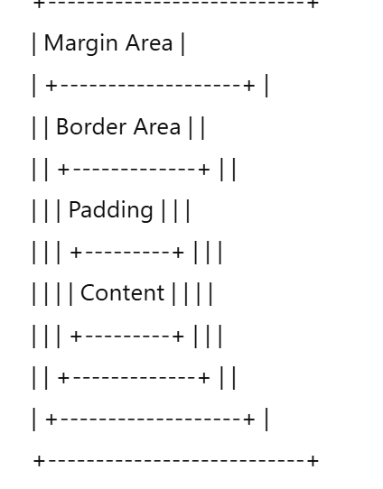

The CSS Box Model describes how every element on a web page is treated as a rectangular box. It defines how content, padding, border, and margin work together to determine the total size and spacing of an element.
Understanding this concept helps you control layout, spacing, and alignment precisely in web design.
width and height.The box below shows how padding, borders, and margins create space around content.
Hover over it to see the smooth transition and shadow effect.
width and height define the size of the content box.padding adds inner spacing inside the border.border adds a visible edge around the padding and content.margin creates space outside the border.box-shadow adds depth for a 3D effect.transition enables smooth animation on hover.Below is a conceptual diagram of how the layers stack in the box model:
css-box-model.html.